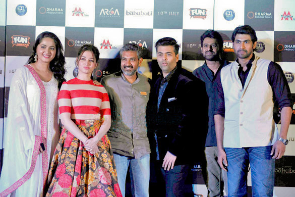

Brand endorsements
From left to right: Anushka Shetty, Tamannaah, S. S. Rajamouli, Karan Johar, Prabhas, Rana Daggubati at the trailer launch of the Hindi version of Baahubali 2: The Conclusion.
Prabhas, who has been signed on by Mahindra & Mahindra as brand ambassador for the new Mahindra TUV300 car, has made his debut in the television commercial arena with their new ad in 2015.[51] He generally does not endorse brands frequently.[52] News 18 reported that he rejected brand endorsements worth ₹150 crore in 2020.[53]
